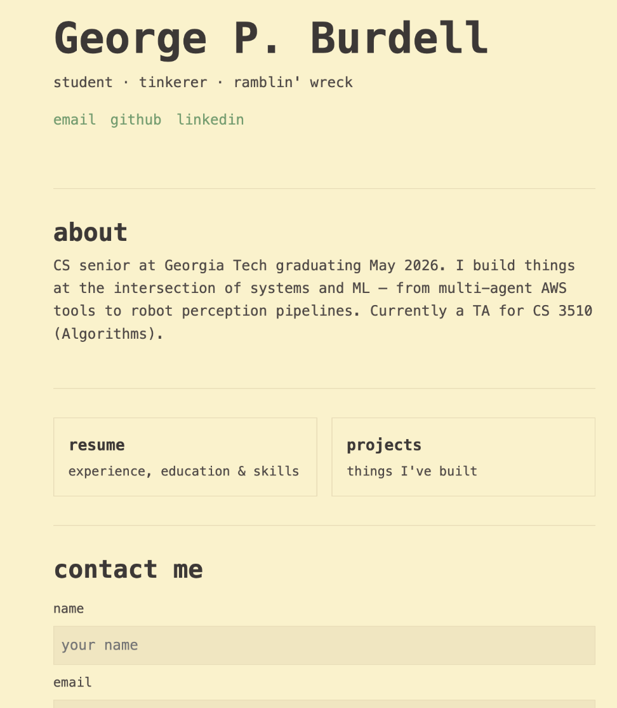

Building out the Homepage
Build out the homepage for our website, and learn how to test frontend attributes with the Claude Code Playwright plugin.
We can now build out the basic homepage using the same structure that we previously utilized:
- 0:12 → start the session
- 0:29 → create the plan
- 0:45 → review the plan and approve it
- 1:24 → review the smoke test and other testing requirements
After following the steps in the video above, we should have a homepage that looks something like the below (yours will likely vary as Claude does not generate deterministic outputs). Feel free to give Claude some specific instructions to change the homepage to your liking with different colors, fonts, etc. This can be achieved by being specific about how you want the homepage to look and feel, or you could even be broad with your instructions, only specifying overall themes or styles, and let Claude take the reins (but this will have higher variability). You can also edit the biography section to your liking yourself or via Claude as well.

In the video, Claude told us to open index.html in a browser ourselves to confirm that everything works and our contact form works. To test our form, we could in theory do this manually, but this process can be automated with Claude Code. This is where plugins come into play. Plugins are similar to VSCode extensions, written by the community that empower Claude to have more abilities. There are plugins to scan for common vulnerabilities in your codebase, review your code and simplify complex functions, and find relevant and current documentation. For our purposes, since we just made a “Contact Me” form, we will use Playwright, a software originally created by Microsoft which was turned into a plugin for Claude Code.
Note: since we don't have a backend setup, the form will throw a 501 error when we try to press the submit button. This is normal because we don't have a backend to actually process the data, but in a real application, the frontend data would be sent to the backend and there would be no error. But here, this error is expected and fully fine.
Installing the Playwright Plugin
To install the Playwright plugin, we need to run these commands:
npm install -g @playwright/clinpx playwright install chromiumplaywright-cli install --skillsThere are several ways to install plugins; this is just one such way. The third command will install a Claude skill that we talked about previously.
Now we can test our form using Playwright:
Congrats! You've created a homepage by following proper practice using Claude Code, and learned about plugins and used one yourself to test your form. Now that we've tested everything to make sure it works, you can commit and submit a PR!